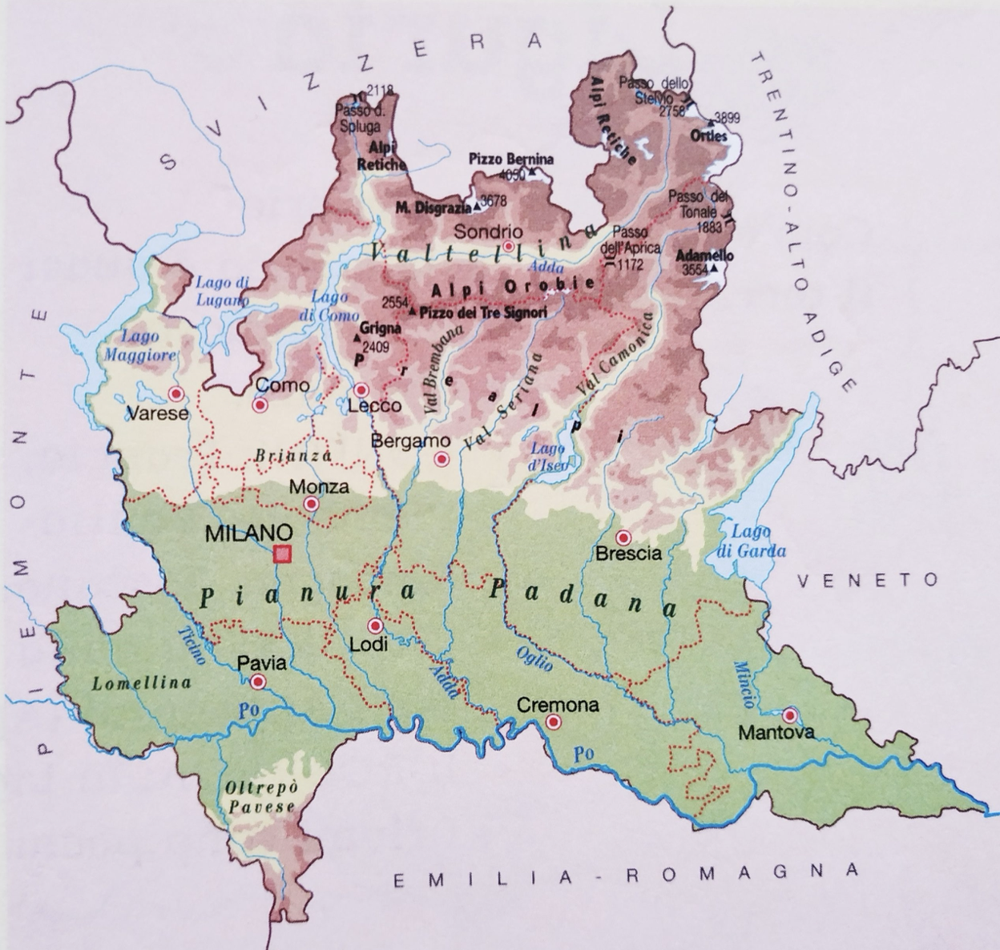

Comming soon...
A year as a MSCA postdoc: trends and spatial patterns (Part 1)

This is the first of three blog posts summarising my first year as a Marie Skłodowska-Curie Actions (MSCA) postdoctoral researcher. In this post, I’ll focus on my work describing preterm birth trends and spatial patterns in Lombardy. The next posts will cover chemical policy annotation (Part 2) and my training, career development, and conference activities (Part 3).
As 2025 comes to a close, I’ve been reflecting on my first year as an MSCA postdoctoral researcher. It felt very different from my previous year as a regular postdoc without dedicated funding. I had more responsibility for my project, but I also had more time and resources to invest in my career through conferences, meetings, trainings, and courses.
Writing the detailed project proposal in 2023 proved invaluable for keeping me aligned with deliverables and objectives. At the same time, I quickly realized that adjustments were inevitable, whether to overcome data limitations, refine methods after conferences and trainings, or incorporate insights from the latest literature.
I spent the early months focusing on describing preterm birth (22-37 gestational weeks) trends and spatial patterns. We have an agreement with the region to access population-level health data covering deliveries from women resident in Lombardy between 2013 and 2024 (≈900,000 pregnancies). Unlike many studies that rely on single or few hospital data, we have population-level data, making our findings more robust and representative. The dataset also includes information to categorise preterm births by labour onset: spontaneous (labour starts naturally) and indicated (medically planned for maternal or fetal health).
To account for differences in population size across provinces (for example, Milan has far more births than smaller provinces) and make trends comparable over time, I calculated preterm birth rates by dividing the number of preterm births by total monthly deliveries for each labour category. At this stage, I could observe that spontaneous preterm births have been decreasing, while medically indicated preterm births followed a less clear, non-linear pattern. To gain a finer understanding, I grouped the data by the 12 provinces of Lombardy and used a two-week resolution, a compromise between weekly and monthly aggregation that retained enough observations to reliably compute trends.
Initial visualizations using rolling means revealed considerable variation, with preterm birth rates fluctuating by several percentage points (often around 2-6%) across provinces and labour types, which made me even more curious about potential environmental influences. Geographic and temporal differences often provide clues about environmental signals in the data. At this point, I realized that fully understanding these patterns would require exploring several modelling approaches, weighing the strengths and limitations of each before deciding on the best method to prepare for future Interrupted Time Series (ITS) analyses to investigate potential causal effects of environmental exposures on preterm birth. Below is a summary of the approaches I considered and what each was missing, which took a few months to learn:
- Rolling means – A simple way to visualise trends over time that I always use at the start.
- Spectral methods – Useful to explore seasonality and periodic patterns.
Missing: More target to single time series analysis rather than adjusting for covariates or spatial variation; one could use the cleaned time series with trend and seasonal pattern
- Functional data analysis – Allowed examining entire trajectories of preterm birth rates.
Missing: Complex to implement, interpret, and incorporate uncertainty; I wanted to try it but regression methods are just easier to interpret and perform
- Generalised Linear Models (GLM) – Provided a basic quantitative framework with trend, seasonality (sin + cos), time varying covariates and Poisson distribution for counts/rates.
Missing: Couldn’t capture non-linear temporal trends; good starting point to compare with more advanced models.
- Generalised Additive Models (GAMs) – Builiding on GLM can add splines to capture non-linear trends.
Missing: Standard GAMs are limited in forecasting and modelling temporal dependence; linear forecast based on last few data points.
- Bayesian linear models – Allowed formal uncertainty quantification and priors.
Missing: Still limited in capturing non-linear trends and dynamic temporal patterns.
- Bayesian Dynamic GAMs – Combined flexibility, uncertainty quantification, and temporal structure with a Gaussian process, which has more interpretable parameters compared to splines. Dynamic GAMs improve forecasting and temporal process modelling, a crucial advantage as I prepare for an Interrupted Time Series (ITS) design for causal inference; even though they have a learning curve which I think it's worth it.
For readers unfamiliar with Dynamic GAMs, Nicholas Clark’s mvgam package and blog are a well-documented starting point: https://nicholasjclark.github.io/mvgam/.
Finding Dynamic GAMs was a turning point. They allowed me to start describing both the temporal evolution and geographic variation of preterm birth rates in much more detail than before, capturing and quantifying subtle trends, differences between provinces, and patterns by labour type. That said, there is still work to do: I need more time to consolidate the results, fine-tune the model parameters, and carefully interpret the outputs before moving on to ITS analyses.
This is the first of three blog posts summarising my first year as a Marie Skłodowska-Curie Actions (MSCA) postdoctoral researcher. In this post, I’ll focus on my work describing preterm birth trends and spatial patterns in Lombardy. The next posts will cover chemical policy annotation (Part 2) and my training, career development, and conference activities (Part 3).
As 2025 comes to a close, I’ve been reflecting on my first year as an MSCA postdoctoral researcher. It felt very different from my previous year as a regular postdoc without dedicated funding. I had more responsibility for my project, but I also had more time and resources to invest in my career through conferences, meetings, trainings, and courses.
Missing: More target to single time series analysis rather than adjusting for covariates or spatial variation; one could use the cleaned time series with trend and seasonal pattern
Missing: Complex to implement, interpret, and incorporate uncertainty; I wanted to try it but regression methods are just easier to interpret and perform
Missing: Couldn’t capture non-linear temporal trends; good starting point to compare with more advanced models.
Missing: Standard GAMs are limited in forecasting and modelling temporal dependence; linear forecast based on last few data points.
Missing: Still limited in capturing non-linear trends and dynamic temporal patterns.